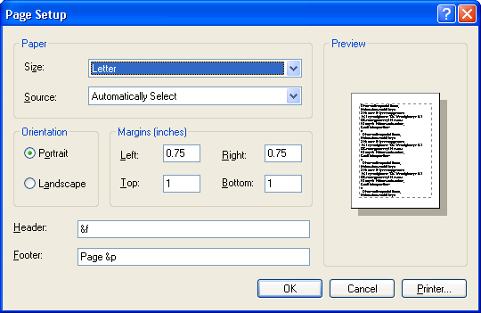

title: Page Setup Dialog Box description: Displays a modal dialog box that allows the user to choose settings that include the paper type, paper source, page orientation, and the width of the page margins. ms.assetid: debde0a0-07d4-46ed-a936-e517eab1852d keywords:
Displays a modal dialog box that allows the user to set the following attributes of the printed page:
You create and display a Page Setup dialog box by initializing a PAGESETUPDLG structure and passing the structure to the PageSetupDlg function. However, the attributes presented in the dialog box vary, depending on the capabilities of the printer. The following illustration shows a typical Page Setup dialog box.

If the user clicks the OK button, PageSetupDlg returns TRUE after setting various members in the PAGESETUPDLG structure to specify the user's selections. The ptPaperSize and rtMargin members contain the values specified by the user. The hDevMode and hDevNames members contain global memory handles for the DEVMODE and DEVNAMES structures. These structures contain additional page information as well as information about the printer. You can use this information to prepare the output to be sent to the selected printer.
If the user cancels the Page Setup dialog box or an error occurs, PageSetupDlg returns FALSE. To determine the cause of the error, call the CommDlgExtendedError function to retrieve the extended error value.
This section discusses the following topics.
By default, the Page Setup dialog box displays information about the current default printer. To direct the dialog box to display information about a specific printer, set the members of a DEVMODE or DEVNAMES structure and assign the global memory handles of these structures to the corresponding member in PAGESETUPDLG. If you specify the name of a printer that is not currently installed, the dialog box displays an error message. To prevent the dialog box from displaying error messages, use the PSD_NOWARNING value. To retrieve information about the default printer without displaying the Page Setup dialog box, use the PSD_RETURNDEFAULT value.
If the default measurement system is inches, the dialog box uses thousandths of inches as the default unit of measurement. If the default measurement system is metric, the dialog box uses hundredths of millimeters as the default unit of measurement. To override the default unit of measurement, set the PSD_INHUNDREDTHSOFMILLIMETERS or PSD_INTHOUSANDTHSOFINCHES flag in the Flags member of the PAGESETUPDLG structure.
The initial values for the margins are one inch, by default. If you set the PSD_MARGINS flag, the dialog box displays the initial margin values specified in the rtMargin member. The default minimum values that the user can specify for the margins are the minimum margins allowed by the printer. If you set the PSD_MINMARGINS flag, the dialog box enforces the minimum margins specified in the rtMinMargin member.
To prevent users from selecting certain options, set any combination of the following flags to disable the corresponding controls.
| Flag | Meaning |
|---|---|
| PSD_DISABLEMARGINS | Disables the edit controls in which the user enters the margin settings. |
| PSD_DISABLEORIENTATION | Disables the Portrait and Landscape radio buttons. |
| PSD_DISABLEPAPER | Disables the controls for selecting the paper size and paper source. |
| PSD_DISABLEPRINTER | Disables the Printer button. |
Â
You can provide a custom template for the Page Setup dialog box, for example, if you want to include additional controls that are unique to your application. The PageSetupDlg function uses your custom template in place of the default template.
To provide a custom template for the Page Setup dialog box
If your custom template is a resource in an application or dynamic-link library, set the PSD_ENABLEPAGESETUPTEMPLATE flag in the Flags member. Use the hInstance and lpPageSetupTemplateName members of the structure to identify the module and resource name.
-Or-
If your custom template is already in memory, set the PSD_ENABLEPAGESETUPTEMPLATEHANDLE flag. Use the hPageSetupTemplate member to identify the memory object that contains the template.
To filter messages sent to the dialog box procedure, you can provide a PageSetupHook hook procedure. If you use a custom template to define additional controls, you must provide a PageSetupHook hook procedure to process input for your controls. In addition, you can provide a PagePaintHook hook procedure to customize the contents of the sample page displayed by the Page Setup dialog box. For more information about the PagePaintHook hook procedure, see Customizing the Sample Page.
To enable a PageSetupHook hook procedure
After processing its WM_INITDIALOG message, the dialog box procedure sends a WM_INITDIALOG message to the PageSetupHook hook procedure. The lParam parameter of this message is a pointer to the PAGESETUPDLG structure used to initialize the dialog box.
The Page Setup dialog box includes an image of a sample page that shows how the user's selections affect the appearance of the printed output. The image consists of a rectangle that represents the selected paper or envelope type, with a dotted-line rectangle representing the current margins, and partial (Greek text) characters to show how text looks on the printed page.
When you call the PageSetupDlg function, you can provide a PagePaintHook hook procedure to customize the appearance of the sample page.
To enable a PagePaintHook hook procedure
Whenever the dialog box is about to draw the contents of the sample page, the hook procedure receives the following messages in the order in which they are listed.
| Message | Meaning |
|---|---|
| WM_PSD_PAGESETUPDLG | The dialog box is about to draw the sample page. The hook procedure can use this message to prepare to draw the contents of the sample page. |
| WM_PSD_FULLPAGERECT | The dialog box is about to draw the sample page. This message specifies the bounding rectangle of the sample page. |
| WM_PSD_MINMARGINRECT | The dialog box is about to draw the sample page. This message specifies the margin rectangle. |
| WM_PSD_MARGINRECT | The dialog box is about to draw the margin rectangle. |
| WM_PSD_GREEKTEXTRECT | The dialog box is about to draw the Greek text inside the margin rectangle. |
| WM_PSD_ENVSTAMPRECT | The dialog box is about to draw in the envelope-stamp rectangle of an envelope sample page. This message is sent for envelopes only. |
| WM_PSD_YAFULLPAGERECT | The dialog box is about to draw the return address portion of an envelope sample page. This message is sent for envelopes and other paper sizes. |
Â
If the hook procedure returns TRUE for any of the first three messages of a drawing sequence (WM_PSD_PAGESETUPDLG, WM_PSD_FULLPAGERECT, or WM_PSD_MINMARGINRECT) the dialog box sends no more messages and does not draw in the sample page until the next time the system needs to redraw the sample page. If the hook procedure returns FALSE for all three messages, the dialog box sends the remaining messages of the drawing sequence.
If the hook procedure returns TRUE for any of the remaining messages in a drawing sequence, the dialog box does not draw the corresponding portion of the sample page. If the hook procedure returns FALSE for any of these messages, the dialog box draws that portion of the sample page.
To prevent the dialog box from drawing the contents of the sample page, you can set the PSD_DISABLEPAGEPAINTING flag. This flag does not affect your PagePaintHook hook procedure, which still receives all the WM_PSD_* messages and can draw the sample page contents.
Â
Â